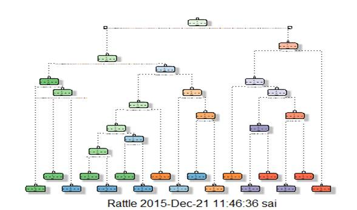
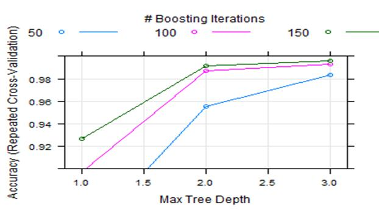
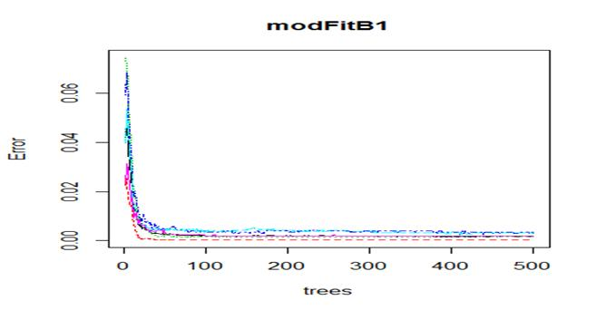

Project Report for Practical Machine Learning:
By: Girija
The goal of this project is to investigate how well an activity was performed by six wearers of electronic devices.
Majority of the attention in human activity recognition research focuses on discrimination between different type of activities, but not quality of the activities. These six participants were between 20 to 28 years with little weight lifting experience. They were asked to perform one set of 10 repetitions of the Unilateral Dumbbell Biceps Curl in five different fashions, namely
Class A: exactly according to the specification
Class B: throwing the elbows to the front
Class C: lifting the dumbbell only halfway
Class D: lowering the dumbbell only half way
Class E: throwing the hips to the front.
Notice that only class A corresponds to the specified execution of the exercise, and others correspond to common mistakes. To ensure the quality of data, an experienced weight lifter was there to supervise the participants. More information is available from the website here.
Project Goal:
The goal of this project is to predict the manner in which the participants did the exercise. In other words, we need to predict the different fashions of the Unilateral Dumbbell Biceps crul performed by the participants. It is the classe varaible in the dataset, and we can use any of the other variables to predict with.
Preparing and getting the data and Load packages:
rm(list = ls(all = TRUE))
library(caret)
library(rpart)
library(rpart.plot)
library(RColorBrewer)
library(rattle)
library(randomForest)
library(knitr)
setwd("C:\\Users\\sai\\Desktop\\Full\\coursera\\machine learning")
training <- read.csv ("C:\\Users\\sai\\Desktop\\Full\\coursera\\machine learning\\pml-training.csv")
testing <- read.csv("C:\\Users\\sai\\Desktop\\Full\\coursera\\machine learning\\\\pml-testing.csv")
head(training)
The raw training data has 19622 rows of observations and 158 features (predictors). Column X is unusable row number. While the testing data has 20 rows and the same 158 features. There is one column of target outcome named classe.
Data Partitioning:
Since the testing data doesn’t consist of the actual classe varaible, we cannot predict the performance of the classification model. Therefore, the training data was splitted up- 60% became the training data, and 40% became the testing data.
inTrain <- createDataPartition(training$classe, p=0.6, list=FALSE)
myTraining <- training[inTrain, ]
myTesting <- training[-inTrain, ]
dim(myTraining)
dim(myTesting)
Model Building:
I Prediction with Decision Trees:
set.seed(123)
modFitA1 <- rpart(classe ~ ., data=myTraining, method="class")
fancyRpartPlot(modFitA1)
output:
|
> set.seed(123) > modFitA1 <- rpart(classe ~ ., data=myTraining, method="class") > fancyRpartPlot(modFitA1) > library(e1071) > predictionsA1 <- predict(modFitA1, myTesting, type = "class") > cmtree <- confusionMatrix(predictionsA1, myTesting$classe) > cmtree Confusion Matrix and Statistics
Reference Prediction A B C D E A 2147 70 6 2 0 B 67 1297 122 66 0 C 18 139 1221 188 52 D 0 12 11 811 85 E 0 0 8 219 1305
Overall Statistics
Accuracy : 0.8643 95% CI : (0.8565, 0.8718) No Information Rate : 0.2845 P-Value [Acc > NIR] : < 2.2e-16
Kappa : 0.8282 Mcnemar's Test P-Value : NA
Statistics by Class:
Class: A Class: B Class: C Class: D Class: E Sensitivity 0.9619 0.8544 0.8925 0.6306 0.9050 Specificity 0.9861 0.9597 0.9387 0.9835 0.9646 Pos Pred Value 0.9649 0.8357 0.7546 0.8825 0.8518 Neg Pred Value 0.9849 0.9649 0.9764 0.9314 0.9783 Prevalence 0.2845 0.1935 0.1744 0.1639 0.1838 Detection Rate 0.2736 0.1653 0.1556 0.1034 0.1663 Detection Prevalence 0.2836 0.1978 0.2062 0.1171 0.1953 Balanced Accuracy 0.9740 0.9071 0.9156 0.8071 0.9348
 |
|
|
II Prediction with Generalized Boosted Regression:
> set.seed(123) > fitControl <- trainControl(method = "repeatedcv", + number = 5, + repeats = 1) > gbmFit1 <- train(classe ~ ., data=myTraining, method = "gbm", + trControl = fitControl, + verbose = FALSE) > gbmFinMod1 <- gbmFit1$finalModel > gbmPredTest <- predict(gbmFit1, newdata=myTesting) > gbmAccuracyTest <- confusionMatrix(gbmPredTest, myTesting$classe) > gbmAccuracyTest Confusion Matrix and Statistics ReferencePrediction A B C D E A 2232 0 0 0 0 B 0 1513 2 0 0 C 0 2 1358 5 0 D 0 3 8 1281 6 E 0 0 0 0 1436 Overall Statistics Accuracy : 0.9967 95% CI : (0.9951, 0.9978) No Information Rate : 0.2845 P-Value [Acc > NIR] : < 2.2e-16 Kappa : 0.9958 Mcnemar's Test P-Value : NA Statistics by Class: Class: A Class: B Class: C Class: D Class: ESensitivity 1.0000 0.9967 0.9927 0.9961 0.9958Specificity 1.0000 0.9997 0.9989 0.9974 1.0000Pos Pred Value 1.0000 0.9987 0.9949 0.9869 1.0000Neg Pred Value 1.0000 0.9992 0.9985 0.9992 0.9991Prevalence 0.2845 0.1935 0.1744 0.1639 0.1838Detection Rate 0.2845 0.1928 0.1731 0.1633 0.1830Detection Prevalence 0.2845 0.1931 0.1740 0.1654 0.1830Balanced Accuracy 1.0000 0.9982 0.9958 0.9968 0.9979

III. Prediction with Random Forests:
Random forest requires more computation time, so it’s wiser to get a list of variables that’s more likely to predict classe well and see how the model performs first. If we predict the classe with the variables that correlates with classe the most (r> 0.1), we get a classification model with accuracy of 0.879 if we apply it on the testing set. This is fairly good since the prediction only depends on 6 variables. The model considering all of the variables after dimension reduction/data cleaning earlier has a accuracy of 0.997, which is even better. |
|
|
|
|
|
> set.seed(123) > modFitB1 <- randomForest(classe ~ ., data=myTraining) > predictionB1 <- predict(modFitB1, myTesting, type = "class") > cmrf <- confusionMatrix(predictionB1, myTesting$classe) > cmrf Confusion Matrix and Statistics
Reference Prediction A B C D E A 2232 3 0 0 0 B 0 1515 0 0 0 C 0 0 1368 3 0 D 0 0 0 1280 12 E 0 0 0 3 1430
Overall Statistics
Accuracy : 0.9973 95% CI : (0.9959, 0.9983) No Information Rate : 0.2845 P-Value [Acc > NIR] : < 2.2e-16
Kappa : 0.9966 Mcnemar's Test P-Value : NA
Statistics by Class:
Class: A Class: B Class: C Class: D Class: E Sensitivity 1.0000 0.9980 1.0000 0.9953 0.9917 Specificity 0.9995 1.0000 0.9995 0.9982 0.9995 Pos Pred Value 0.9987 1.0000 0.9978 0.9907 0.9979 Neg Pred Value 1.0000 0.9995 1.0000 0.9991 0.9981 Prevalence 0.2845 0.1935 0.1744 0.1639 0.1838 Detection Rate 0.2845 0.1931 0.1744 0.1631 0.1823 Detection Prevalence 0.2849 0.1931 0.1747 0.1647 0.1826 Balanced Accuracy 0.9997 0.9990 0.9998 0.9968 0.9956 |
|
 |
Predicting Results on the Test Data:
Random Forests gave an Accuracy in the myTesting dataset of 99.89%, which was more accurate that what I got from the Decision Trees or GBM. The expected out-of-sample error is 100-99.89 = 0.11%.
> predictionB2 <- predict(modFitB1, testing, type = "class")
> predictionB2
22 3 4 5 6 7 8 9 10 11 12 13 14 15 16 17 18 19 20 21 B A B A A E D B A A B C B A E E A B B B Levels: A B C D E
Writing the results to a text file for submission:
pml_write_files = function(x){
n = length(x)
for(i in 1:n){
filename = paste0("problem_id_",i,".txt")
write.table(x[i],file=filename,quote=FALSE,row.names=FALSE,col.names=FALSE)
}
}
pml_write_files(predictionB2)
***********END*************